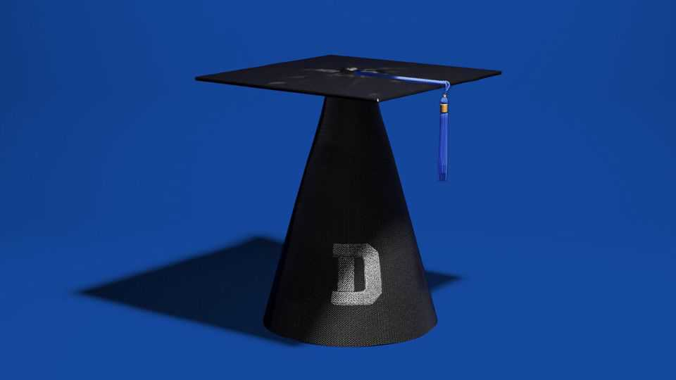

Students are doing worse than you think
Some at college or university are testing no better than ten-year-olds
June 25th 2026

IN RECEnT weeks more than 1,800 maths and science lecturers at the University of California, one of America’s largest and best public university systems, have signed an open letter detailing a tricky problem. First-year undergraduates, they say, are increasingly arriving without the basic skills they need to succeed. At the campus in Berkeley, they write, some 20-30% of students taking an early calculus course turn up displaying “severe preparation deficits”. The challenge has become so great, they add, that instructors are having to reteach middle-school mathematics.
The letter is the latest entry in a widening debate about post-secondary education, university admissions practices—and the acuity of America’s young. It follows a gobsmacking report in November at the California system’s San Diego campus. Academics there noted that the number of first-year students entering with maths skills below high-school level had increased nearly thirtyfold in five years, to almost one in eight. Some 70% of the lagging students, they argued, were not performing at the level expected of a 14-year-old.
Worries about undergraduate maths skills pair with long-running dismay at falling levels of literacy. Lecturers warn of literature students who seem incapable of finishing books. It is not just on the west coast, or in public universities, where these problems are reported. At Harvard some humanities and social-science professors say they feel compelled to shorten texts, according to a report released to faculty in October. Students are arriving at America’s most famous university “with less experience reading complex prose and less capacity for focus and sustained attention.” They “struggle with readings that students completed with ease just ten years ago”.
Professors have been griping about students for as long as there have been ivory towers. Backing up anecdotes with broad-based data can be hard. After secondary school, learners very rarely sit nationally or regionally standardised exams. Fact-finders thus rely a lot on spotty reports from faculty, such as those in California, who feel compelled to raise the alarm.
But observers seeking a sense of global trends—and America’s place within them—need not fly completely blind. At least some insight may be wrung from a once-a-decade test carried out by analysts at the OECD, a club of mostly rich countries. Its “Survey of Adult Skills” aims to gauge how far citizens in dozens of countries have the literacy and numeracy necessary to thrive in the real world.
At their simplest, its tests find out how well people can make sense of the instructions on a pill bottle, or work out how much wallpaper they must buy to redecorate a room. At more advanced levels, they explore how well people can draw sound conclusions from complex analysis and charts. Test-takers are divided into five levels of acuity, in each discipline. Level 1 ought to be achievable by a rich-world pupil at the end of primary school, says Andreas Schleicher of the OECD.
Some 160,000 people of all ages were tested in the last round (the results of which were published at the end of 2024). The Economist asked the OECD for data just of those under 35 who were enrolled in “tertiary” education at the time they took the tests. That includes students in all universities along with learners in most kinds of colleges (but only those taking courses that are in theory more advanced than are offered in high schools).
Many of them do very well—but a striking share perform abysmally (see chart 1). Across rich countries some 8% of students in tertiary education notch up a score in literacy no better than one might expect from a ten-year-old child. The share is about the same for numeracy. Worse, the share at or below this bar has risen since the tests were last run, a little over a decade ago. The share of very poor performers in literacy has more than doubled.
Scores at the individual-country level vary widely. In Estonia fewer than 2% of tertiary students score at or beneath the bottom bar. That rises to a fifth in Poland (for literacy) and a quarter in Chile (for maths). Brits can feel reasonably sanguine, despite their growing public disdain for academia; results for its students are better than average, and improving. America’s scores, by contrast, are among the most disappointing. One in seven of its tertiary students scored at or below primary-school level in the literacy tests, up from about one in twenty a decade ago. The share at or below the bottom level for numeracy, meanwhile, was almost one in five.
What is going on? In part, colleges and universities are inheriting problems that have originated in the world’s schools. One cannot overestimate the impact of the pandemic. Countries enforced national school closures lasting 20 weeks on average. Rota systems for in-person learning, and quarantines for “close contacts”, then disrupted lessons more. In the years immediately after that disaster it was as if some students “had not gone to high school”, says Jessica Hooten Wilson, a professor at Pepperdine University in California. “It was actually a very scary thing to see.”

Yet in many places schooling was already going backwards when the mega-lurgy hit. Scores in NAEP, America’s national reference test, reached a peak in the early 2010s and have been edging down since. Scores from PISA, an international exam taken by 15-year-olds, are drifting the same way in a swathe of other countries (see chart 2). Places with unusually deep, long-running declines include France, Germany, the Netherlands and New Zealand.
The causes of these trends are hotly debated. Rising migration is relevant: newcomers tend to be poorer than native-born students, and more likely to speak a foreign language at home. Meanwhile traditionalists accuse school reformers of watering down testing and accountability schemes. And of replacing time-tested syllabi with faddish curriculums that downplay learning concrete facts in favour of nice-sounding but vapid “soft” skills.
Claims that social media have been “rewiring” children’s brains bear strong echoes of past panics, such as over television and computer games. But there is not much doubt that screens of all kinds have displaced more nourishing hobbies: the share of nine-year-olds in America who say they read books for pleasure has fallen from nearly 60% in the 1990s to 37% now. Indeed, it is not just school pupils or university students that are seeing declines in literacy: the OECD’s tests also find this trend among older populations, notes Mr Schleicher, perhaps because people are getting less practice than in the past reading long and complex texts.
Yet colleges and universities that claim to be merely passive observers of this are marking their own homework. In many countries they enjoy broad control of their own admissions policies. They have frequently failed to use these freedoms to hold standards high.
For decades critics have accused college and university officials of lowering entry criteria to capitalise on growing demand. Nowadays the dynamics are a bit different: in some rich countries the number of 18-year-olds is nearing or past its peak. Administrators may find it even harder to resist watering down standards when the alternative is to downsize. Indeed, comparing the OECD’s data on students’ skills with the changing number of students in tertiary systems throws up a correlation that deserves further study: shrinking systems are especially likely to have collected lots of students who score in the lowest levels of those tests.
Falling achievement in schools has mostly been driven by children who already ranked in the bottom half of their classes, not by clever clogs at the top. So the drip of unprepared students into some of America’s best universities demands additional explanation. The irate academics in California, and in many other parts of the country, blame it on the scrapping of entry tests. Before the pandemic more than half of bachelors-granting universities in America required applicants to sit tests of numerical and verbal reasoning—usually the SAT or ACT (these tests help substitute for the standardised exams that exist in many other countries). Now it is as few as 10%.
In the depths of covid American universities argued that it would be impossible to sit these tests safely. But they were also inspired by claims that the exams are biased against black and Latino students, who have tended to do worse on them than average. Cynics say that canning them has made it easier for administrators to keep moulding the ethnic make-up of their campuses in whatever fashion they decide is just—despite a Supreme Court ruling in 2023 that outlawed race-based affirmative action. For institutions down the food chain, binning the tests probably simplified the more pressing task of simply making sure there are enough bums on seats.
All this has made America’s admissions officers depend more on alternative signals that are growing only less reliable. Application essays were already often written by parents and teachers but are now worth next to nothing, given how easily they can be whipped up using AI, says Mina Aganagic, a maths professor at Berkeley and one author of the open letter. As for high-school grades, they have been inflating fast. In recent years many American states have lowered the thresholds high-schoolers must cross to earn graduation certificates. About a quarter of all the students whom professors in San Diego have been dispatching to their weakest remedial maths class had notched up perfect scores in maths in their last years at school. Admissions is becoming a “black box”, says Professor Aganagic. “I think most people will agree that selecting students at random does not serve anyone.”
A major question for colleges and universities is not just how they will respond to a growing pool of underprepared applicants, but whether they are themselves prepared to continue enforcing high expectations. The open letter in California warns that with weaker students has come “growing pressure to dilute quantitative rigour”. In Britain big national exams somewhat blunt grade inflation in secondary schools, but that is not the case in higher education. Though grades have fallen somewhat from a pandemic high, in 2025 some 30% of bachelors’ students in Britain got a first-class degree, up from 7% in 1995.

At Yale 79% of grades were an A or A- in 2022-23, compared with 67% in 2010-11. The rate was lowest in economics courses, at about 50%; it was above 80% for humanities, ethnic and education studies, among others (see chart 3). In April senior academics at Yale said, in an essay exploring why faith in higher education has been declining, that “decades of inflation and compression have rendered the college grading system almost meaningless as an academic measure”.
A report issued last year by the dean of undergraduate studies at Harvard contains an admirably frank summary of the pressures driving grade inflation, drawn from conversations with faculty. Students who have never once received a mediocre mark during their school days have become more confident about appealing less-than-perfect grades at university. Academics at Harvard fear students will avoid courses run by tough-markers, and that this might hurt their own careers. They perceive that managers are taking more notice of what students write on end-of-course evaluation forms. That provides further incentive to try to keep the punters happy.
For a decade Harvard has been “exhorting faculty to remember that some students arrive less prepared for college than others, that some are struggling with difficult family situations or other challenges…and nearly all are suffering from stress”, according to the report. Academics who grade them badly have not always been certain the university would “have their back”. Changing fashions in teaching also play a role. Group projects are more difficult than exams to mark objectively. Some lecturers even cite interest in concepts like “ungrading” or “contract-based learning” in which students earn A-grades for completing all assigned work.
On top of all this now lands AI, which appears to be enabling rampant cheating. Some 94% of undergraduates in Britain report using AI to help with assessed work, according to a survey released in March by HEPI, a think-tank. Some 12% admitted pasting AI-generated text directly into coursework, up from 3% in 2024. Nearly half of students in STEM (science, technology, engineering and mathematics)—and a quarter of humanities students—judged that AI-generated content would “get a good grade” in their subject (see chart 4).

In America during the 2023-24 academic year some two-thirds of learners in public universities were using AI, and an estimated 9% of those were using it to cheat, according to research published in May. The rate of deception was highest—gallingly—for students of economics (17%) and journalism (16%). The numbers are surely much higher now, says Igor Chirikov of Berkeley, one of the study’s authors.
For now, the cheating pays off. In a second study published as a working paper last month Dr Chirikov analysed 500,000 grades awarded by a big (unnamed) university in Texas between 2018 to 2025. He found the number of top marks being handed out in courses that involve skills AI is good at, such as writing and coding, has soared since ChatGPT launched in late 2022. The share of “A” grades in these subjects has risen 13 percentage points, or about 30% from the baseline. He finds no similar inflation in subjects for which talking robots are probably not very useful.
Academics have little faith in tools that claim to detect AI-written papers, and lots to lose from hurling accusations of fraud. Says Dr Chirikov: “You can’t ban a tool that you are also expected to teach.” Many lecturers are reintroducing invigilated assessments (during covid, open-book tests that students may take home and complete within a 24-hour period became popular). But that can meet resistance from administrators who must find the space and staff for properly proctored exams.
For some, AI has induced a sense of resignation. It is growing common to hear academics shrug that perhaps students no longer need strong basic skills, because so much of the work they do in future will involve tweaking things made by AI. That is not pragmatism; it is surrender.■